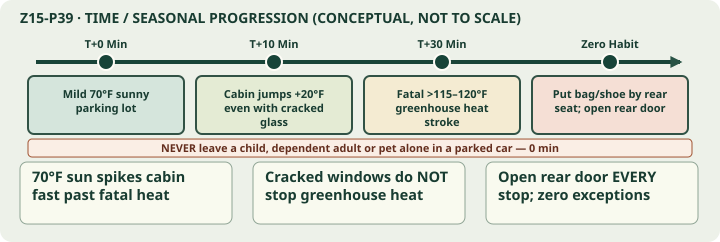

Z15-P39 · Disaster scenarios · New manuscript
Prevent fatal parked-vehicle heat deaths with zero-exception look-before-locking rules
Eliminate preventable pediatric, older-adult, and pet heat-stroke deaths inside parked cars—even on mild sunny days.
When it applies · Every motorist, parent, caregiver, and pet owner during spring, summer, and autumn sunshine.
Equipment · Physical back-seat reminder habit (bag/shoe/phone placed beside child seat) and zero-exception exit scan.

Actions
- NEVER leave a child, dependent adult, or pet alone inside a parked vehicle for even "just two minutes"—greenhouse solar heating spikes cabin temperatures by roughly 20°F in 10 minutes and can reach fatal temperatures above 120°F even when outdoor air is a mild 70°F and windows are cracked open.[D09, X07]
- Build automatic fail-safe habits to defeat routine-change memory slips: place your purse, work badge, lunch bag, or left shoe right beside the rear child car seat, ALWAYS open the back door to look before locking, and keep parked cars locked at home so toddlers cannot climb inside unattended.[D09]
- If you ever see a child or pet locked alone in a hot parked car showing distress or unresponsiveness, call 911 IMMEDIATELY and follow dispatcher/Good Samaritan legal guidance to get them out and begin immediate rapid cooling.[D09, T09]
Failure recognition · Cracking car windows an inch in a 75°F sunny parking lot for ten minutes while running into a store with a sleeping toddler or dog in back.[D09, X07]
Verify · Confirm back-seat look-before-lock habit active on every drive, parked vehicles locked at home, and zero unattended minutes tolerated.[D09]
Stop or change course · Any child, adult, or pet left inside a hot vehicle is an immediate life-threatening emergency requiring urgent rescue and 911 medical cooling.[D09, T09]
Evidence and editorial notes
- D09 · FEMA / Ready.gov · Extreme Heat (current web edition)
- Section: Extreme Heat Waves, Heat Domes, and Power-Outage Cooling Plans · Conditions: Prolonged heat advisories, excessive heat warnings, and grid-strain brownouts
Support: Identify public cooling centers and air-conditioned backup locations ahead of heat waves, check twice daily on older adults/children/chronically ill neighbors, block solar gain through windows, never leave people or pets in parked vehicles, and activate 911 immediately for heat stroke.
Limitations: Electric fans alone do not prevent heat illness when indoor air temperatures climb into extreme heat ranges (above ~95°F) with high humidity. · Conflicting evidence: None; aligns with CDC-HEAT, E08, E19, and T09.
Editorial note: Anchors urban/rural heat-wave resilience and vulnerable-neighbor checks. · Specialist reviewer: Public health and emergency medicine
Primary source · checked 2026-11-24 - T09 · CDC NIOSH · Heat-related Illnesses (current web edition)
- Section: Heat stroke > Symptoms and First aid · Conditions: Suspected heat stroke after exertion or heat exposure
Support: Confusion, slurred speech or loss of consciousness can indicate heat stroke. Call 911 and cool the person promptly.
Limitations: Exertional heat stroke can occur even in moderate ambient temperatures during heavy effort. · Conflicting evidence: None; aligns with T05.
Editorial note: Triggers immediate emergency call and cooling stop condition. · Specialist reviewer: Emergency and wilderness medicine
Primary source · checked 2026-11-24 - X07 · NPS · Death Valley Safety (Desert Travel and Heat) (current web edition)
- Section: Death Valley Safety > Desert Heat, Dehydration, Flash Floods and Vehicle Breakdown · Conditions: Arid desert travel, canyon country and extreme summer heat
Support: Desert heat accelerates fluid and electrolyte loss rapidly, temperatures inside parked vehicles spike to fatal levels within minutes, dry washes flash-flood from distant storms and staying with a disabled road vehicle is generally safer than walking into extreme heat.
Limitations: Cell service is widely absent across desert basins; water needs can exceed 1 gallon/day dramatically during heat. · Conflicting evidence: None; aligns with CDC-HEAT and NWS-HEAT.
Editorial note: Core desert-environment evidence across Z12 heat/arid cards. · Specialist reviewer: Desert safety and emergency medicine
Primary source · checked 2026-11-24
Source lineage · FEMA Extreme Heat and NPS Desert Safety; new manuscript · Classification · New manuscript.